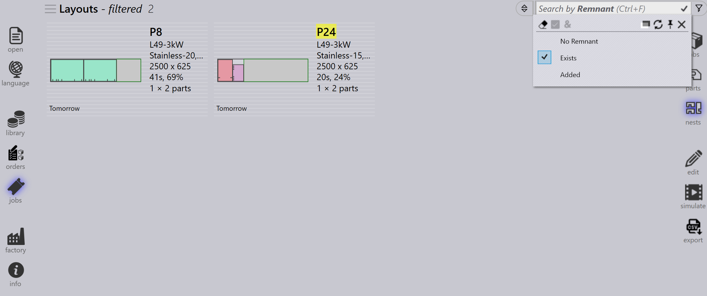

Job filtre
Job Page Filters hjælper Dem med at lokalisere Jobs, Aktive Dele og Nests ved kun at vise elementer, der matcher valgte betingelser. De forenkler søgning, sortering og administration af jobs eller dele, hvilket forbedrer den overordnede effektivitet i arbejdsgangen.

Eksempler på tilgængelige filtre
Prioritet og Aflevereres den
-
Filteret Prioritet giver Dem mulighed for at søge og vise dele eller jobs baseret på deres tildelte prioritet (Haster, Høj, Lav, Normal).
-
Når De vælger et bestemt prioritetsniveau, fremhæves eller vises kun de dele med den specifikke prioritet i resultaterne.
-
For eksempel, hvis De vælger Høj Priority, filtrerer systemet og fremhæver kun de dele, der er markeret som High Priority på nestet.

-
Filteret Aflevereres den giver Dem mulighed for at søge og vise dele eller jobs på deres tildelte datoer.
-
Når De vælger en bestemt leveringsdato, vises kun de dele med den specifikke leveringsdato fremhævet eller i resultaterne.
-
Ud over foruddefinerede leveringsdatofiltre som I dag, I går, I morgen osv., kan De også indtaste brugerdefinerede datoværdier/intervaller i yymmdd-format i søge- tekstfeltet.
-
De kan også bruge udtryk med ulighedsoperatorer (<, <=, >, >=, =) efterfulgt af datoværdien. Eksempel: >=250901 ville søge alle elementer, der forfalder den 1. september 2025 eller senere.

|
Hvis filterlisten skjuler søgeindholdet, kan De gøre den gennemsigtig
ved hjælp af kommandoen Skift opacitet|*Højre museklik*
|
Delnavn/ Layout name
-
Filteret Delnavn vil være tilgængeligt på jobs- og nest-siden.
-
Mens De skriver delnavnet, vises en forslagsliste for hurtigt at hjælpe med at vælge den korrekte del.
-
Valg af et eller flere elementer fra forslagslisten indsnævrer søgeresultaterne til kun de valgte dele.
-
På Jobs-siden udvides denne adfærd til at inkludere Layout Names, hvilket giver brugerne mulighed for at søge efter enten delnavn eller layoutnavn.

Rest
-
Brug filteret Rest til at søge layouts baseret på restmaterialetilgængelighed.
-
Rullelisten viser følgende valgmuligheder:
-
Ingen rest - viser layouts, hvor der ikke er oprettet restmateriale.
-
Findes - viser layouts, hvor der allerede findes restmateriale.
-
Tilføjet - viser layouts, hvor nyt restmateriale er tilføjet.
-
-
Hjælper med at identificere og administrere resterende pladematerialer effektivt.
